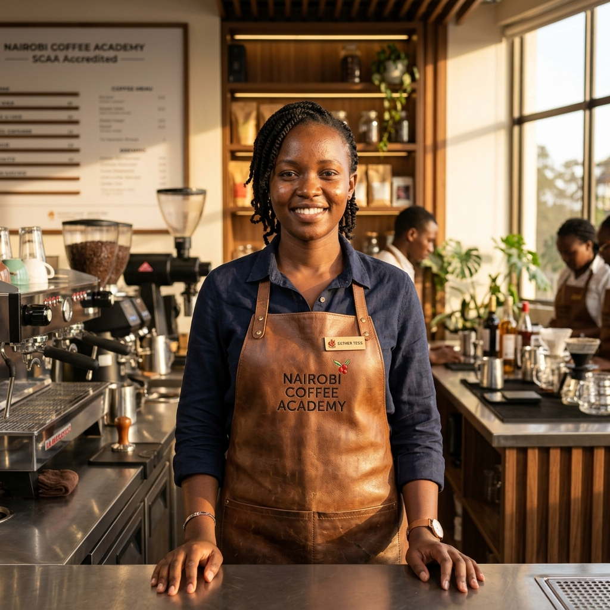
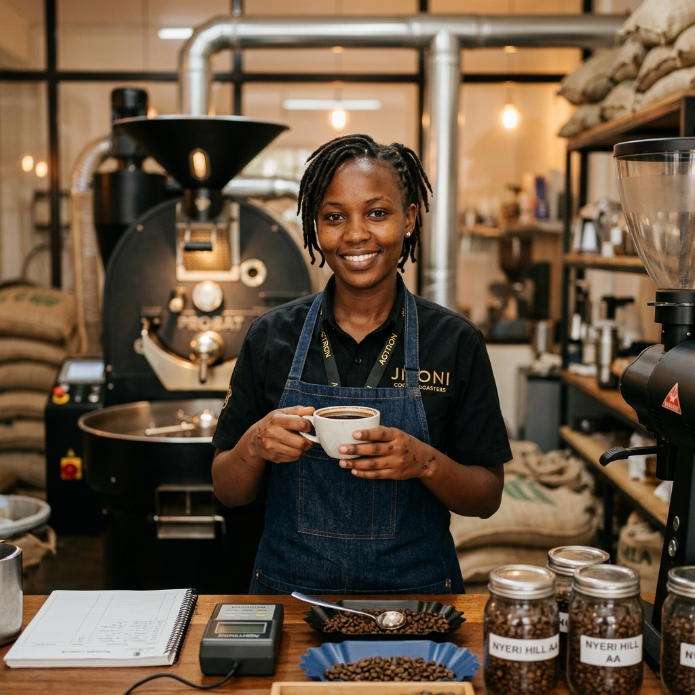
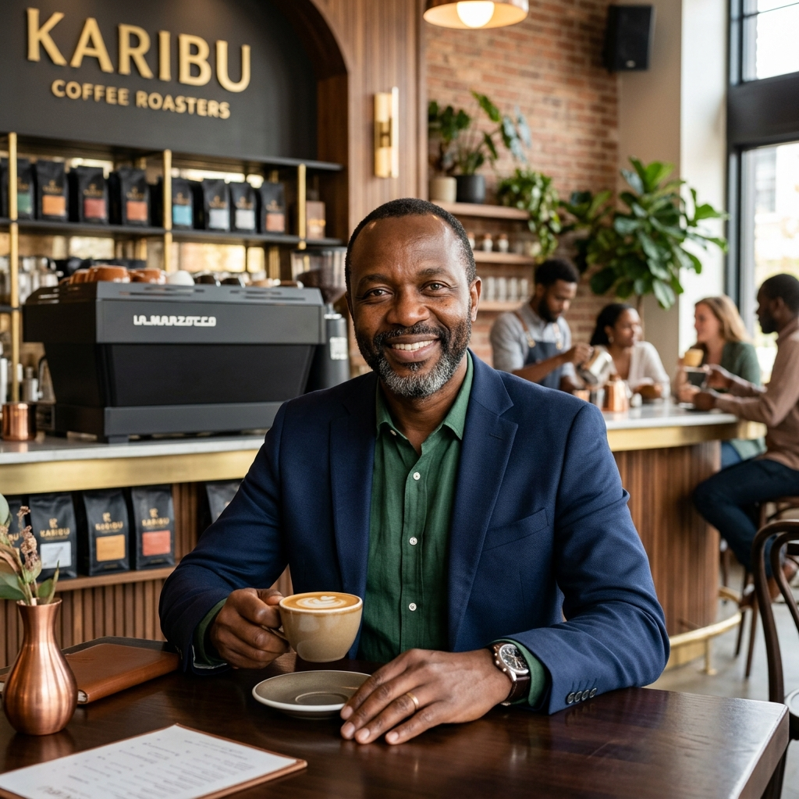

Esther "Tess" Atieno Ochieng is a titan of East Africa's specialty coffee scene. As a back-to-back Kenya Barista Champion (2022 & 2023) and World Barista Championship representative, she brings global competitive standards to the heart of Nairobi.
Beyond the championships, Tess is one of Africa’s few female Q-Graders—an elite certification for coffee quality evaluation. As a certified SCA (Specialty Coffee Association) Trainer and former Head Barista for Moyee Coffee / FairChain Kenya, she has dedicated her career to consulting, masterclasses, and elevating the next generation of coffee professionals.
Tess starts her career as a junior barista, developing a deep obsession with extraction science and latte art precision.
Becomes one of the youngest female Q-Graders in Africa, mastering the sensory evaluation of green and roasted coffee.
Wins back-to-back Kenya Barista Championships and represents Kenya on the global stage at the WBC.
Establishes the Nairobi Institute of Coffee to formalize specialty coffee education in the region.
We believe coffee is a science. From water chemistry to roast curves, every variable is measured and mastered.
Kenyan coffee is our heritage. We infuse every lesson with the stories of the farmers who make this possible.
Our students are trained to work anywhere in the world, from the local roastery to the world-class specialty cafe.
Learn from an elite squad of champion baristas, certified sensory science roasters, and manual extraction experts trained to teach.
2-Time Kenya Barista Champion, elite Q-Grader, and certified SCA Trainer.
Certified SCA Professional with 7+ years of experience training competition-level baristas.

SCA Certified Roaster specializing in sensory evaluation and green coffee roast profiling.

Extraction specialist expert in water chemistry, TDS analysis, and manual brewing techniques.